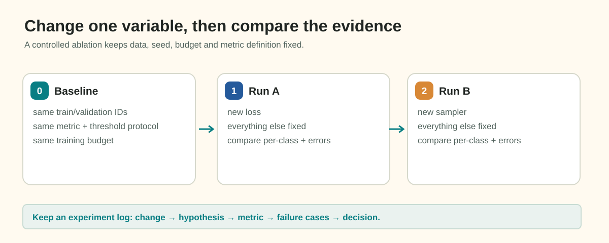

Controlled Experimentation and Scientific Iteration
When training deep segmentation models, the temptation to try multiple promising ideas at once is overwhelming. A team might simultaneously swap their encoder backbone, add cosine learning-rate decay, introduce rare-class oversampling, switch from BCE to Focal Loss, and apply aggressive new augmentations—all in a single training run.
If the validation score drops, which change was responsible? More dangerously, if the validation score improves by +0.03, did all five changes help—or did one brilliant change help by +0.07 while two harmful changes degraded performance by -0.04?
Without controlled experimentation, deep learning degenerates into superstitious trial-and-error. You waste hundreds of GPU hours chasing phantom improvements and deploying bloated pipelines with harmful components.
This final guide establishes the scientific method for machine learning engineering: the One-Factor-At-A-Time (OFAT) protocol, invariant baselines, ablation methodology, and an experiment audit matrix to ensure every line of code in your pipeline is justified by rigorous empirical evidence.
1. Observable Problem: The Multi-Change Confusion
Consider this real-world interaction between two project logs:
Run 01: Baseline
Architecture: ResNet-34 U-Net | Loss: BCE + Soft Dice | Schedule: Constant 1e-3 | Sampling: Natural
Val Foreground Dice: 0.502 | Clean Specificity: 98.4%
Run 02: "The Kitchen Sink"
Student changes:
1. Switched encoder to EfficientNet-B2
2. Added Cosine Annealing with Warmup
3. Enabled 5x Rare-Class Oversampling
4. Replaced BCE with Focal Loss
5. Added Random Gamma & Contrast Augmentation
Val Foreground Dice: 0.518 (+0.016 improvement!)The student declares Run 02 an unambiguous success and permanently adopts all five changes.
Two weeks later, the team conducts a systematic ablation study and discovers:
- The Cosine Annealing schedule had actually improved the score by +0.045.
- The Focal Loss and 5x Oversampling had degraded performance by -0.029 by flooding clean images with false alarms!
- By bundling all changes together, the student had masked a severe degradation and locked two harmful components into their pipeline.
2. The Four Principles of Controlled Experimentation

Figure 7.1: The scientific iteration cycle in deep learning. Every experiment isolates a single factor, tests an explicit falsifiable hypothesis against a frozen baseline anchor, and reaches a definitive audit decision.To achieve scientific attribution, adhere strictly to these four rules:
Principle 1: The One-Factor-At-A-Time (OFAT) Rule
In any individual experiment run, change exactly one independent variable relative to your established baseline anchor:
- Change the learning-rate schedule, OR
- Change the loss formulation, OR
- Change the sampling rule, OR
- Change the encoder architecture. Never change two simultaneously. If an experiment changes both the optimizer and the dataset sampling, you cannot attribute the resulting score to either factor.
Principle 2: Freeze Invariant Foundations
Every experiment in a series must share an identical foundation:
- Identical Validation Split: Always evaluate against the exact same combination-stratified fold (e.g. Fold 0). Never compare a Fold 0 score to a Fold 1 score or a random split.
- Identical Preprocessing & Dimensions: Grayscale loading, standard normalization, and native \(128 \times 800\) resolution must remain fixed.
- Identical Evaluation Protocol: The metric computation code, threshold evaluation grid, and minimum area filters must be identical.
- Identical Random Seed: Keep data splitting, worker initialization, and augmentations seeded deterministically.
Principle 3: Formulate a Falsifiable Hypothesis
Before launching an experiment, write down an explicit hypothesis stating why the change should help and what specific measurement will confirm or refute it:
- Poor Hypothesis: "I want to try cosine decay to see if it improves things."
- Rigorous Scientific Hypothesis: "Because our baseline oscillates in narrow minima during the final 10 epochs, switching from constant LR to Cosine Annealing with a 3-epoch warmup will reduce late-stage loss variance and increase validation Foreground Dice on thin defects by at least \(+0.02\)."
Principle 4: Distinguish Signal from Stochastic Noise
Every deep learning run contains random variance from mini-batch shuffling and weight initialization.
- If an experiment alters a hyperparameter and the validation Dice shifts from \(0.562\) to \(0.564\) (\(+0.002\)), this difference is within typical run-to-run noise! Do not declare victory.
- A genuine architectural or algorithmic improvement typically produces a noticeable shift (\(+0.015\) to \(+0.04\)) or a marked change in error distributions.
- When in doubt, repeat the run across two random seeds to verify that the gain is reproducible.
3. The Experiment Audit Matrix
Maintain a structured experiment tracking matrix (in Weights & Biases or a markdown table) that records every run:
Fictional Run Comparison Matrix:
| Run ID | Experiment Name | Changed Factor vs. Anchor | Train Budget | Val Loss | Val FG Dice | Clean Spec. | Memory / Speed | Verdict & Decision |
|---|---|---|---|---|---|---|---|---|
exp-00 |
Anchor Baseline | Baseline: U-Net (ResNet-34), Constant LR \(10^{-3}\), Natural Sampling, BCE+Dice | 30 ep | 0.228 | 0.502 | 98.4% | 4.8 GB / 22 img/s | Anchor Established |
exp-01 |
Sched: Cosine | Changed: Cosine Annealing with 3-ep Warmup | 30 ep | 0.198 | 0.548 (+0.046) | 98.6% | 4.8 GB / 22 img/s | PROMOTE: Clear gain in boundary Dice; promotes to new anchor. |
exp-02 |
Loss: Focal Loss | Changed: Replaced BCE with Focal Loss (\(\gamma=2\)) | 30 ep | 0.215 | 0.521 (-0.027) | 88.2% | 4.8 GB / 21 img/s | REVERT: Severe drop in clean specificity; refuted hypothesis. |
exp-03 |
Samp: Sqrt Rare | Changed: Bounded Sqrt Sampler (\(w_{\max}=4.0\)) | 30 ep | 0.204 | 0.566 (+0.018) | 97.1% | 4.8 GB / 22 img/s | PROMOTE: Rare Defect B recall rose from 0% to 38%; clean specificity held \(>97\%\). |
exp-04 |
Arch: EfficientNet-B2 | Changed: Replaced ResNet-34 encoder with B2 | 30 ep | 0.182 | 0.589 (+0.023) | 97.4% | 5.4 GB / 18 img/s | PROMOTE: Better multi-scale feature extraction on longitudinal scratches. |
exp-05 |
Post: Min Area 100 | Changed: Applied \(A_{\min} = 100\text{ px}\) to all classes | Eval | — | 0.551 (-0.038) | 99.2% | Post-process | REVERT: Filtered out genuine small defect_b instances; must keep \(A_{\min}=0\) for rare class. |
Notice how every single improvement was isolated, attributed, and validated independently.
4. The Anatomy of an Ablation Study
An ablation study is the inverse of iterative optimization: you take your best high-performing pipeline and systematically remove or disable one component at a time to verify that each component is strictly necessary.
Full Optimized Pipeline:
[EfficientNet-B2] + [Warmup+Cosine] + [Bounded Rare Sampling] + [Calibrated Area Filter]
Score: 0.589
Ablation 1: Remove Bounded Rare Sampling (revert to Natural Uniform)
Score drops to 0.552 (-0.037) -> Proves that rare sampling is vital for Defect B recall.
Ablation 2: Remove Cosine Schedule (revert to Constant LR)
Score drops to 0.544 (-0.045) -> Proves that schedule decay is vital for boundary annealing.
Ablation 3: Remove Area Filtering (revert to A_min = 0 for all classes)
Score drops to 0.574 (-0.015) -> Proves that speckle suppression provides a real precision boost.If removing a component causes zero drop in score, that component is dead weight! Delete it from your codebase immediately to keep your system lean, fast, and maintainable.
5. Common Experimentation Anti-Patterns
- The "Kaggle Leaderboard Overfitting" Anti-Pattern:
- Submitting every single training run to the public leaderboard and using the public score to guide hyperparameter decisions.
- Why it fails: The public leaderboard represents a small subset of the test set. Over-tuning to it causes public overfitting, leading to massive leaderboard shakeup on the private test set. Trust your local combination-stratified validation fold!
- The "Comparing Uncalibrated Models" Anti-Pattern:
- Comparing Model X at threshold \(\tau = 0.50\) against Model Y at threshold \(\tau = 0.50\), when Model X's optimal threshold is \(0.35\) and Model Y's optimal threshold is \(0.65\).
- Why it fails: Always calibrate decision thresholds and area filters on held-out validation data before declaring one architecture superior to another.
- The "Changing Seeds to Find a Lucky Run" Anti-Pattern:
- Re-running the identical model with seeds 41, 42, 43, 44, and 45 until one seed achieves a slightly higher score, then claiming an improvement.
- Why it fails: This is statistical noise, not architectural progress.
6. Ungraded "Try It": Design an Experiment Plan
Imagine you have just established a baseline model with the following characteristics:
- Validation Foreground Dice: \(0.48\)
- Clean Material Specificity: \(98.8\%\)
- Rare Defect B Recall: \(0.0\%\) (Completely missed)
- Small Defect (\(<100\text{ px}\)) Recall: \(12\%\)
You have a research budget of 4 experiments.
Task: Formulate a sequential 4-step experimental plan:
- What single factor will you test in Experiment 1? State your hypothesis.
- If Experiment 1 succeeds, what factor will you test in Experiment 2?
- What negative symptom will you monitor in your experiment logs to ensure that clean-material performance is not sacrificed?
7. Authoritative References
- Sculley, D., et al. (2015). Hidden Technical Debt in Machine Learning Systems. Advances in Neural Information Processing Systems (NeurIPS). (Foundational reference on pipeline complexity, dead code, and ablation discipline).
- Bouthillier, X., et al. (2021). Accounting for variance in machine learning benchmarks. Proceedings of Machine Learning and Systems (MLSys). (Empirical variance and seed significance).
- Weights & Biases Experiment Tracking Best Practices.